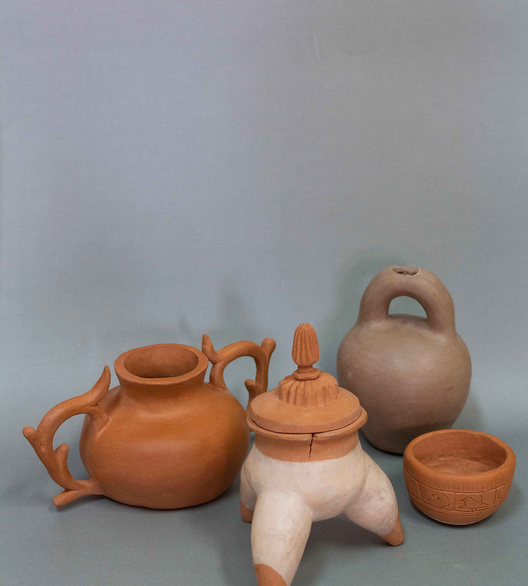
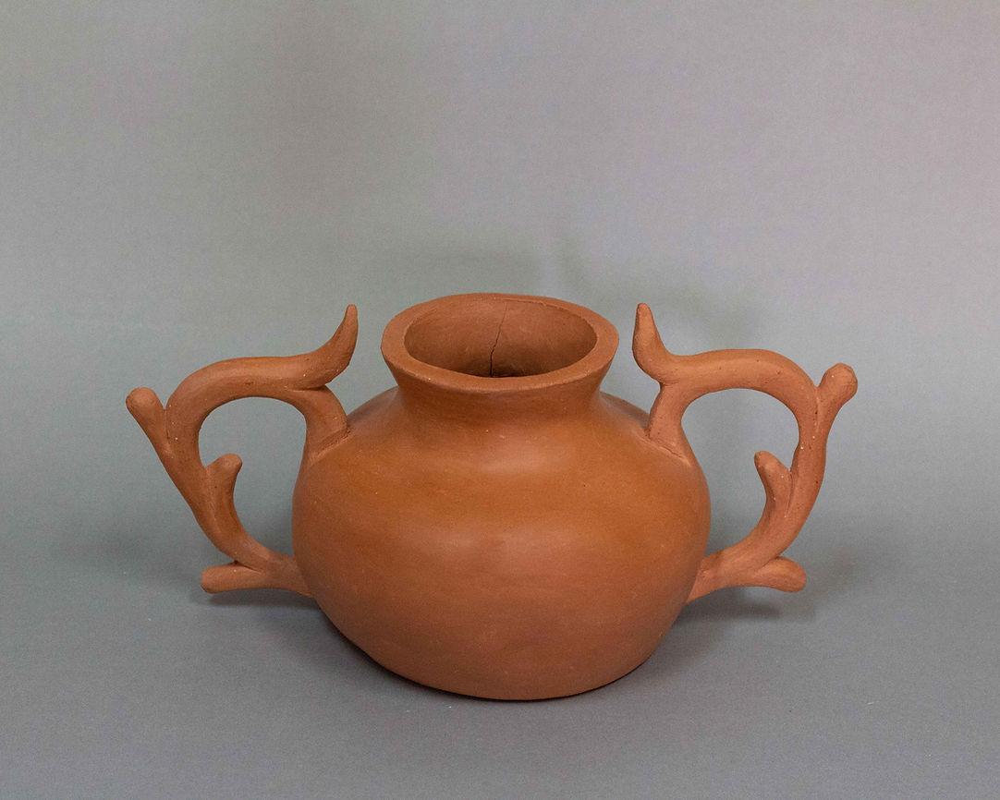
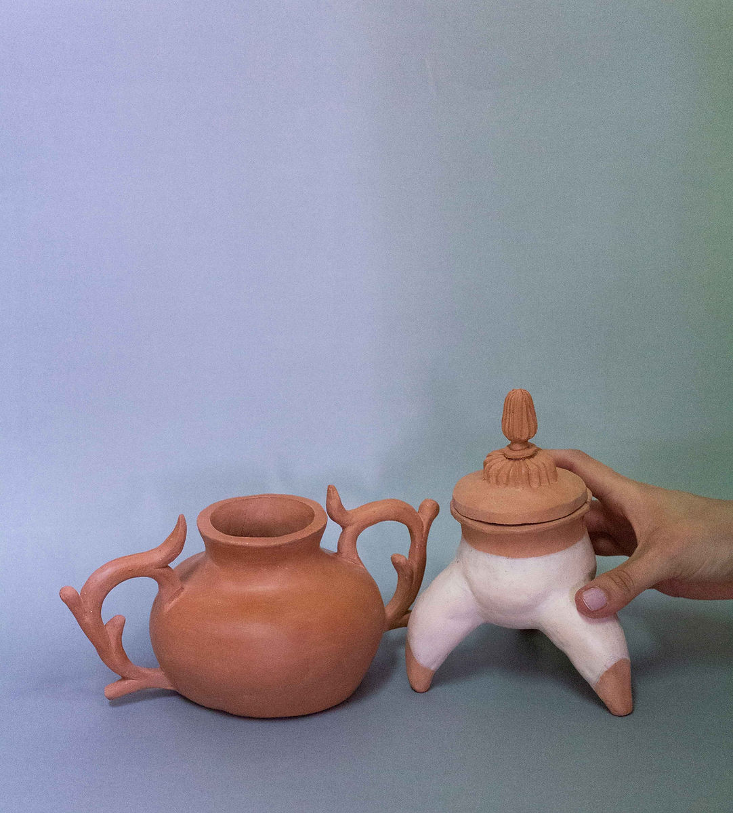

VASIJA / VER / VACIAR
VASIJA / VER / VACIAR fue un taller de cerámica enfocado en el estudio de prácticas prehispánicas y sus posibles usos en el contexto contemporáneo. Se llevó a cabo en 2024, en Bogotá, y tuvo una duración de tres meses. Se planteó como un espacio de aprendizaje, experimentación y reflexión material.
El taller fue gestionado por Materia Prima, colectivo de artistas conformado por Paloma Pardo y Sofía Lozano, y propuso un acercamiento a diversas formas de construcción de la vasija, técnicas específicas como la terra sigillata, un acabado cerámico de origen antiguo que consiste en la aplicación de arcillas refinadas para generar superficies pulidas, lisas y de alto detalle, sin necesidad de esmaltes. Esta técnica permitió explorar relaciones entre superficie, registro y huella, en diálogo con las prácticas prehispánicas abordadas en el taller.
Este proceso surgió a partir de una residencia realizada por la artista Sofía Lozano en Ecuador, donde recorrió reservas y museos en la ciudad de Quito, como el Museo Weilbauer y el Museo Nacional del Ecuador. Allí, se aproximó a prácticas de conservación, clasificación y preservación de piezas arqueológicas, experiencias que nutrieron el enfoque conceptual y metodológico del taller.



Piezas en cerámica. 2024.